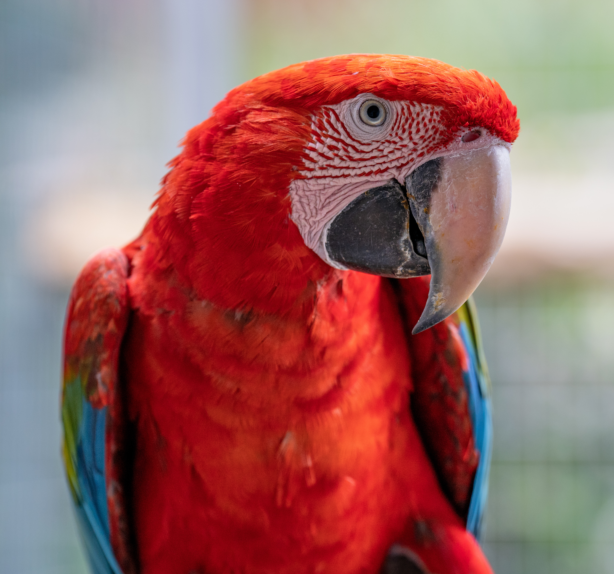
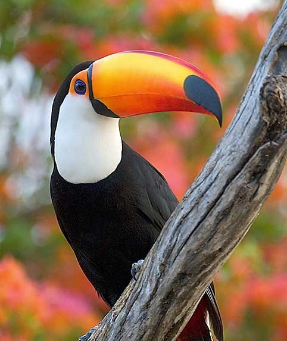
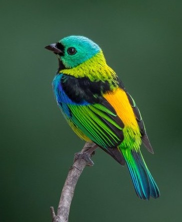
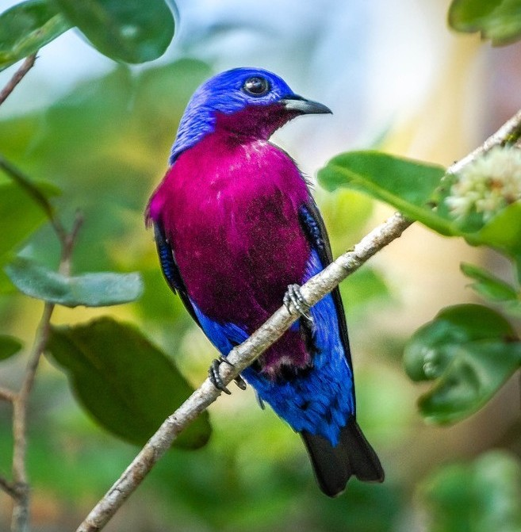
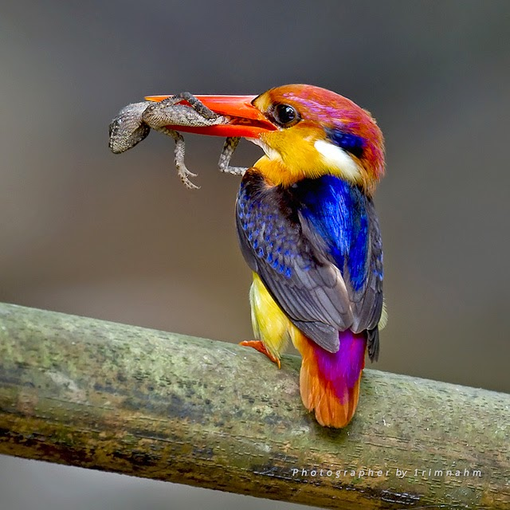
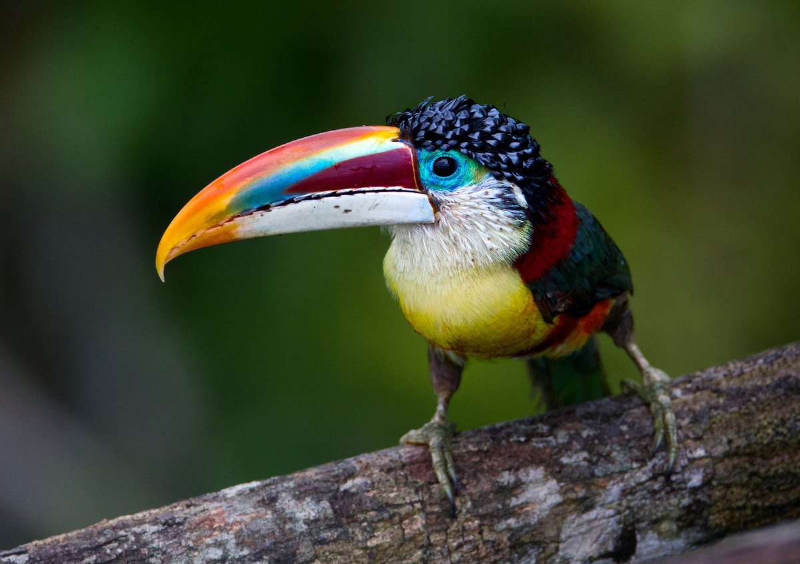

Escolha uma ave e descubra curiosidades científicas e as cores marcantes das aves da Amazónia.

A arara-vermelha é uma das aves mais emblemáticas da Amazónia.

O tucano toco destaca-se pelo seu enorme bico colorido.

Pequena e extremamente colorida, vive nas copas das árvores.

A cotinga roxa tem uma plumagem azul-arroxeada brilhante.

Pequeno e rápido, vive perto da água.

Parente dos tucanos, vive em bandos e alimenta-se de frutos.